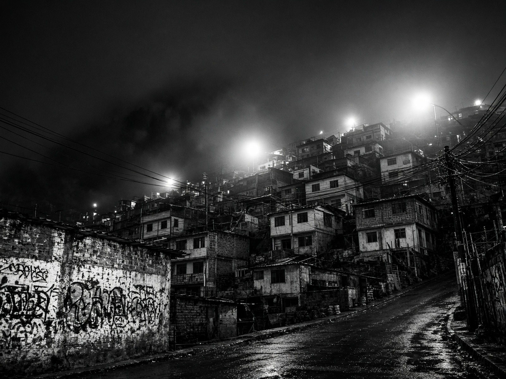

Gótico andino
Mónica Ojeda y el consolidado del “gótico andino” en la narrativa contemporánea
Con novelas como Mandíbula, Nefando y Las voladoras, la ecuatoriana Mónica Ojeda se consolidó como una de las voces más visibles de la narrativa de terror y violencia simbólica escrita desde los Andes.
Marolyn Regueiro · · 1 min de lectura

Mónica Ojeda (Quito, 1988) ha construido en la última década un cuerpo de obra centrado en la violencia, el deseo y los paisajes andinos. Títulos como Mandíbula (2018), Nefando y Las voladoras la situaron en el circuito editorial de habla hispana y en conversaciones sobre lo que algunos críticos denominan “gótico andino”: una literatura que trabaja el miedo y la alteración sin recurrir al decorado fantástico tradicional.
En sus novelas, el entorno —el páramo, el colegio, la montaña— no funciona como telón de fondo neutral. Aparece asociado a tensiones de clase, de género y de poder. Esa combinación de atmósfera opresiva y conflicto social ha sido uno de los rasgos más comentados de su escritura y explica, en parte, su circulación junto a autoras como Mariana Enríquez y Samanta Schweblin en paneles, reseñas y listas de lectura sobre el terror latinoamericano actual.
Ojeda ha participado en ferias, festivales y presentaciones en América Latina y Europa. Su obra se discute tanto en clave literaria como en relación con debates sobre violencia, cuerpo y territorio. En ese sentido, forma parte del mismo mapa de autoras que han ganado visibilidad en la última década y que combinan narrativa de fuerte carga atmosférica con una circulación pública creciente.